<!DOCTYPE html>
<html lang="en">
<head>
<meta charset="UTF-8">
<meta name="viewport" content="width=device-width,initial-scale=1">
<title>2.4 Combining Two Different Squares — Baudhayana Pythagoras Theorem</title>
<meta name="description" content="Class 8 Mathematics · Part 2 · Baudhayana Pythagoras Theorem · 2.4 Combining Two Different Squares">
<link rel="icon" href="data:image/svg+xml,<svg xmlns='http://www.w3.org/2000/svg' viewBox='0 0 100 100'><text y='.9em' font-size='90'>📘</text></svg>">
<link rel="stylesheet" href="../../../assets/book.css">
<link rel="stylesheet" href="https://cdn.jsdelivr.net/npm/katex@0.16.11/dist/katex.min.css" crossorigin="anonymous">
</head>
<body>
<header class="topbar">
<div class="topbar-in">
  <div class="crumb">
    <span class="c1"><a href="../../../index.html">Library</a> · <a href="../../index.html">Class 8 Mathematics · Part 2</a></span>
    <span class="c2">Baudhayana Pythagoras Theorem · 2.4 Combining Two Different Squares</span>
  </div>
  <a class="tb-btn" data-nav="prev" href="../../02-baudhayana-pythagoras-theorem/05-figure-it-out/index.html" title="Figure it Out">←</a>
  <details class="drawer"><summary class="tb-btn" title="Sections in this chapter">☰</summary>
<div class="drawer-panel"><div class="dh">Baudhayana Pythagoras Theorem</div><a href="../01-doubling-a-square-2.1/index.html">2.1 Doubling a Square</a><a href="../02-halving-a-square-2.2/index.html">2.2 Halving a Square</a><a href="../03-hypotenuse-of-an-isosceles-right-triangle-2.3/index.html">2.3 Hypotenuse of an Isosceles Right Triangle</a><a href="../04-decimal-representation-of-2/index.html">Decimal Representation of 2</a><a href="../05-figure-it-out/index.html">Figure it Out</a><a href="../06-combining-two-different-squares-2.4/index.html" aria-current="page">2.4 Combining Two Different Squares</a><a href="../07-figure-it-out/index.html">Figure it Out</a><a href="../08-right-triangles-having-integer-sidelengths-2.5/index.html">2.5 Right–Triangles Having Integer Sidelengths</a><a href="../09-figure-it-out/index.html">Figure it Out</a><a href="../10-a-long-standing-open-problem-2.6/index.html">2.6 A Long-Standing Open Problem</a><a href="../11-further-applications-of-the-baudh-yana-pythagoras-theorem-2.7/index.html">2.7 Further Applications of the Baudhāyana - Pythagoras Theorem; A Problem from Bhāskarāchārya’s Līlāvatī</a><a href="../12-figure-it-out/index.html">Figure it Out</a><a href="../13-summary/index.html">SUMMARY</a></div></details>
  <a class="tb-btn" data-nav="next" href="../../02-baudhayana-pythagoras-theorem/07-figure-it-out/index.html" title="Figure it Out">→</a>
  <button class="tb-btn" data-theme-toggle title="Toggle light / dark" aria-label="Toggle light or dark theme">◐</button>
</div>
<div class="progress"><span style="width:22.9%"></span></div>
</header>
<main class="wrap">
<div class="sec-head">
  <p class="eyebrow"><a href="../index.html">Chapter 2 · Baudhayana Pythagoras Theorem</a></p>
  <h1>2.4 Combining Two Different Squares</h1>
  <p class="sec-meta">Textbook pages 9–15 · 36 figures</p>
</div>
<article class="prose">
<p>We have seen in the previous sections how to combine two copies of the same square to make a larger square whose area is the sum of the areas of the two smaller squares.</p>
<figure class="fig side-fig"></figure>
<figure class="fig"></figure>
<figure class="fig"></figure>
<p>\(+ \to\)</p>
<p>The sidelength of the larger square is the length of the diagonal of either of the smaller squares.</p>
<p>What if we wish to combine two squares of ‘different’ sizes to make a large square whose area is the sum of the two smaller squares?</p>
<figure class="fig"></figure>
<figure class="fig"></figure>
<p>\(+ \to\) ?</p>
<p>In his Śulba-Sūtra (Verse 1.12), Baudhāyana also gives a truly remarkable solution to this more general problem of combining two different sized squares. He writes:</p>
<figure class="fig wide"></figure>
<figure class="fig wide"></figure>
<p>That is, to combine two different squares, make a right-angled triangle whose perpendicular sides are the sidelengths of the two squares. The square whose sidelength is the hypotenuse of this right-angled triangle has an area that is the sum of the areas of the original two squares.</p>
<aside class="sidenote"><p>Area \(A +\) Area B</p></aside>
<figure class="fig">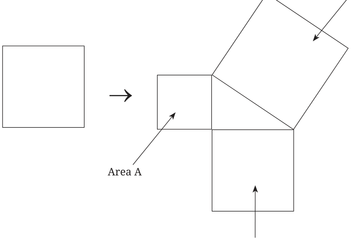</figure>
<figure class="fig"></figure>
<aside class="sidenote"><p>Area B</p></aside>
<p>Why does Baudhāyana’s method work?</p>
<p>Can you see why the method works in the case where the two squares are the same size? Does it agree with the method we used earlier to combine two same sized squares into a bigger square? Subsequently in his Śulba-Sūtra (Verse 2.1), Baudhāyana provides another verse that helps in explaining why the method works in general:</p>
<p>To combine different squares, mark a rectangular portion of the larger square using a side of the smaller square. The diagonal of this rectangle is the side of a square that has area equal to the sum of the areas of the smaller squares.</p>
<p>Let us follow Baudhayan᾽s instructions.</p>
<ul class="qlist">
<li><span class="mk">•</span><span class="lt">Join the two squares.</span></li>
</ul>
<figure class="fig">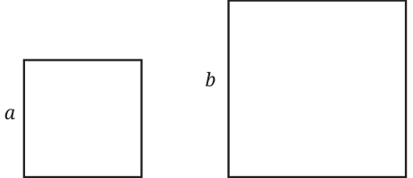</figure>
<figure class="fig side-fig">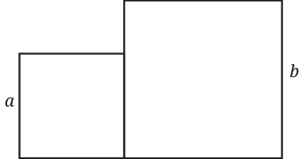</figure>
<figure class="fig wide"></figure>
<figure class="fig wide"></figure>
<ul class="qlist">
<li><span class="mk">•</span><span class="lt">Mark a rectangular portion of the larger square using a side of the</span></li>
</ul>
<p>smaller one, and draw its diagonal. By doing this, we get a right triangle with perpendicular sides a and b.</p>
<p>1.</p>
<figure class="fig">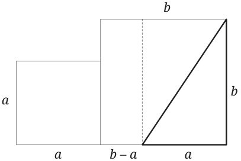</figure>
<figure class="fig side-fig">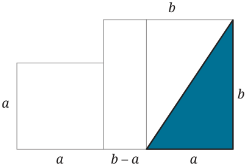</figure>
<p>-  -</p>
<ul class="qlist">
<li><span class="mk">•</span><span class="lt">Make a 4-sided figure over the hypotenuse by drawing three more</span></li>
</ul>
<p>of such right triangles:</p>
<p>2.</p>
<figure class="fig">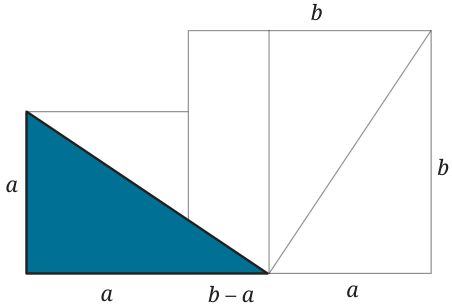</figure>
<p>3.</p>
<figure class="fig">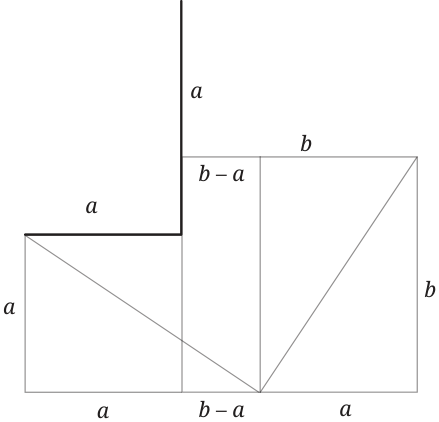</figure>
<figure class="fig side-fig">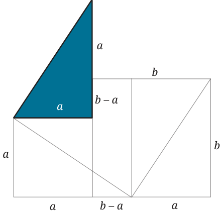</figure>
<p>\(- -\)</p>
<figure class="fig wide"></figure>
<figure class="fig wide"></figure>
<p>4.</p>
<figure class="fig">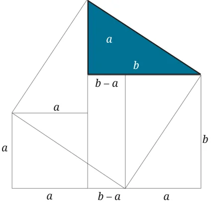</figure>
<figure class="fig side-fig">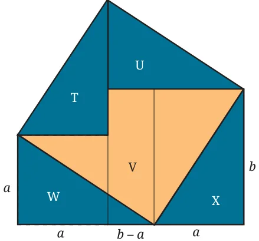</figure>
<p>\(- -\)</p>
<ul class="qlist">
<li><span class="mk">•</span><span class="lt">The 4-sided figure obtained (T \(+ U +\) V) is in fact a square with an</span></li>
</ul>
<p>area equal to the sum of the areas of the two smaller squares!</p>
<p>Why?</p>
<ul class="qlist">
<li><span class="mk">•</span><span class="lt">As T, U, X and W are all congruent, the sides of this new 4-sided</span></li>
</ul>
<p>figure all have the same length. Notice the angles.</p>
<figure class="fig">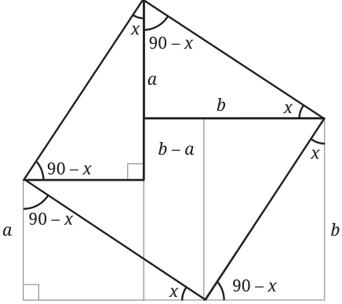</figure>
<aside class="sidenote"><p>\(b - a\)</p></aside>
<p>Explain why all the angles of this new 4-sided figure are right angles and so it is a square.</p>
<p>Notice that this new square has as its sidelength, the hypotenuse of the right triangle of sides a and b.</p>
<ul class="qlist">
<li><span class="mk">•</span><span class="lt">Baudhāyana’s assertion is now clear:</span></li>
</ul>
<p>The area of the square on the hypotenuse = the sum of the areas of T, U, and \(V =\) the sum of the areas of V, W, and \(X =\) the sum of the areas of the two given squares.</p>
<figure class="fig wide"></figure>
<figure class="fig wide"></figure>
<p>Combining Two Squares Using Paper</p>
<p>Cut out and join two different sized squares as follows:</p>
<figure class="fig">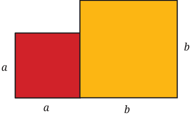</figure>
<p>Now make two cuts to make three pieces:</p>
<figure class="fig">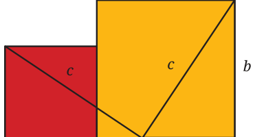</figure>
<p class="lead">\(b - a\)</p>
<p>Rearrange the three pieces into a larger square:</p>
<figure class="fig">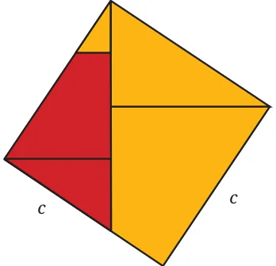</figure>
<p>You have now combined two smaller squares into a larger square! Now make a right triangle using the two smaller squares. Draw a square on the hypotenuse.</p>
<figure class="fig wide"></figure>
<figure class="fig wide">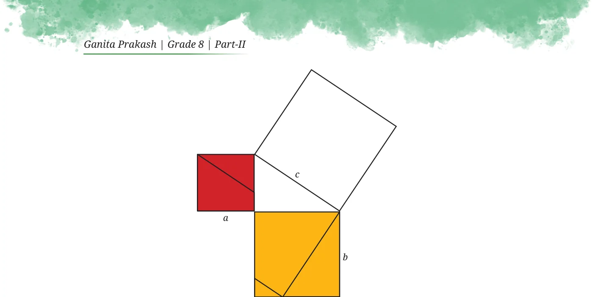</figure>
<p>Cover the square on the hypotenuse using your pieces.</p>
<figure class="fig">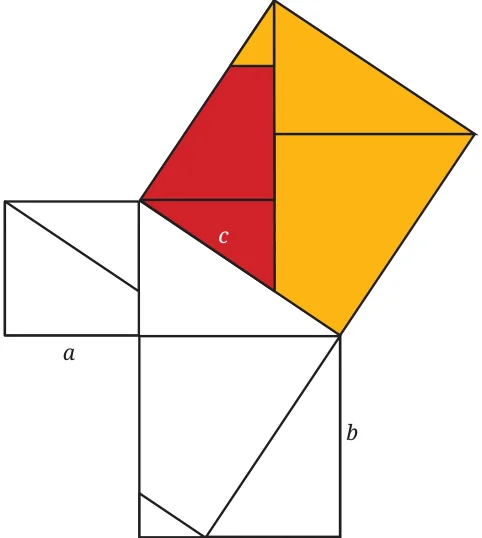</figure>
<p>This shows that if a right triangle has shorter sides of length a and b,</p>
<p>and hypotenuse of length c, then the areas of the two smaller squares, a</p>
<p>and b , add up to the area of the larger square, c :</p>
<p>\(a + b = c\) .</p>
<p>This is the famous and fundamental theorem of Baudhāyana on right-angled triangles:</p>
<figure class="fig wide"></figure>
<figure class="fig wide"></figure>
<p>Baudhāyana was the first person in history to state this theorem in this generality and essentially modern form. The theorem is also known as the Pythagorean Theorem, after the Greek philosopher-mathematician Pythagoras (c. 500 BCE) who also admired and studied this theorem, and lived a couple hundred years after Baudhāyana. It is also often called the transitional name ‘Baudhāyana-Pythagoras Theorem’ so that everyone knows what theorem is being referred to.</p>
<p>Using Baudhāyana’s Theorem</p>
<figure class="fig side-fig">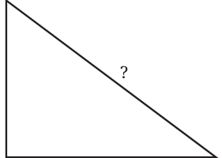</figure>
<p>Make a right-angled triangle in your notebook whose shorter sidelengths are 3 cm and 4 cm.</p>
<p>Now, measure the length of the hypotenuse. It should read about 5cm. In fact, we could have used Baudhāyana’s Theorem to predict that the hypotenuse is 4 cm exactly 5cm! Let \(a = 3\) and \(b = 4\), the lengths in cm of the two shorter sides. Then, by Baudhāyana’s Theorem, the length c of the hypotenuse satisfies the equation,</p>
<p>\(a + b = c\)</p>
<div class="mathblock"><p>\(3 + 4 = c\)</p></div>
<div class="mathblock"><p>\(9 + 16 = c\)</p></div>
<div class="mathblock"><p>\(25 = c\) So, \(c = 5\) cm.</p></div>
</article>
<nav class="pager"><a class="" data-nav="prev" href="../../02-baudhayana-pythagoras-theorem/05-figure-it-out/index.html"><span class="dir">← Previous</span><span class="t">Figure it Out</span><span class="ch">Baudhayana Pythagoras Theorem</span></a><a class="nx" data-nav="next" href="../../02-baudhayana-pythagoras-theorem/07-figure-it-out/index.html"><span class="dir">Next →</span><span class="t">Figure it Out</span><span class="ch">Baudhayana Pythagoras Theorem</span></a></nav>
</main><footer class="site">Generated from the source textbook PDFs · text, figures and exercises belong to their respective publishers.</footer><script defer src="https://cdn.jsdelivr.net/npm/katex@0.16.11/dist/katex.min.js" crossorigin="anonymous"></script>
<script defer src="https://cdn.jsdelivr.net/npm/katex@0.16.11/dist/contrib/auto-render.min.js" crossorigin="anonymous"
  onload="renderMathInElement(document.body,{delimiters:[
    {left:'\\(',right:'\\)',display:false},
    {left:'$$',right:'$$',display:true},
    {left:'\\[',right:'\\]',display:true}],throwOnError:false,ignoredTags:['script','noscript','style','textarea','pre','code']})"></script>
<script src="../../../assets/book.js"></script>
</body>
</html>
